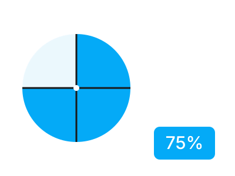

Хүрээ 1
Тоо тоолол
- Бүхэл, бутархай, аравтын тоог жишиж, эрэмбэлж, 0.1, 0.01-ийн нарийвчлалтай тоймлох
- Энгийн бутархайг хураах, ерөнхий хуваарьт шилжүүлж жиших
- Энгийн бутархай дээр нэмэх, хасах, үржих, хуваах үйлдэл гүйцэтгэх
- Энгийн бутархай, аравтын бутархай, процентыг хооронд нь хөрвүүлэх
- Харьцаа, пропорц ашиглан процентын болон хэсгийн бодлого бодох
- Урт, жин, эзлэхүүн, хугацааны нэгжийг хооронд нь шилжүүлэх